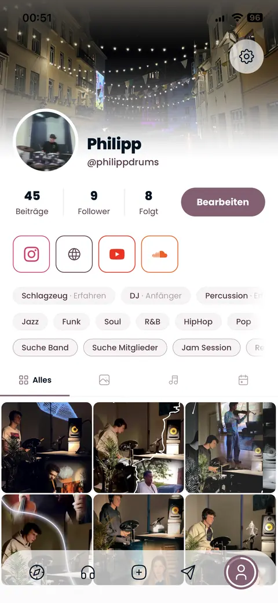
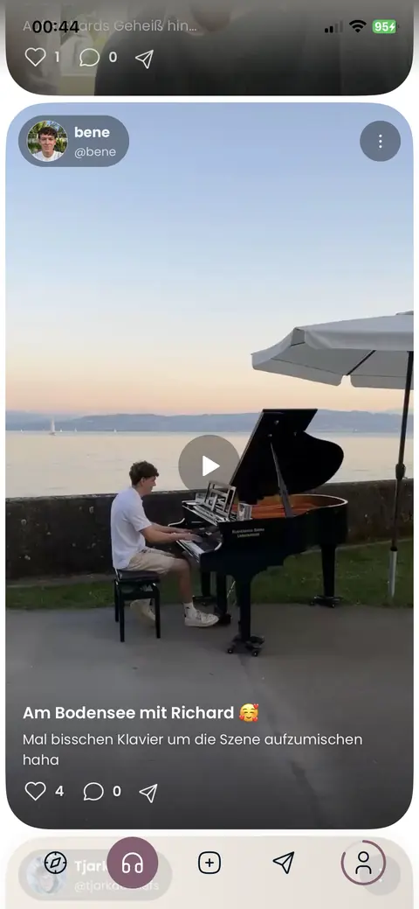
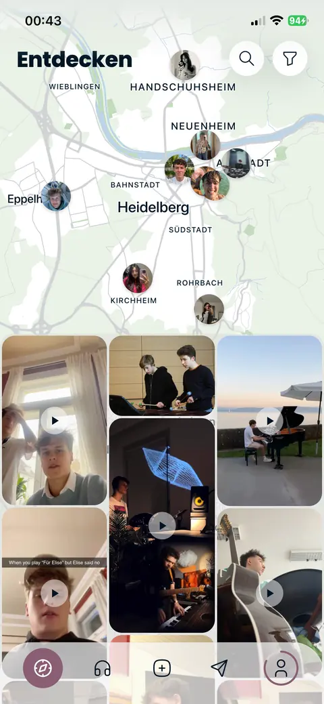
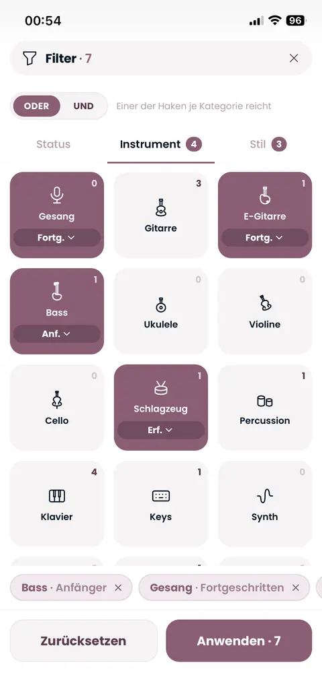
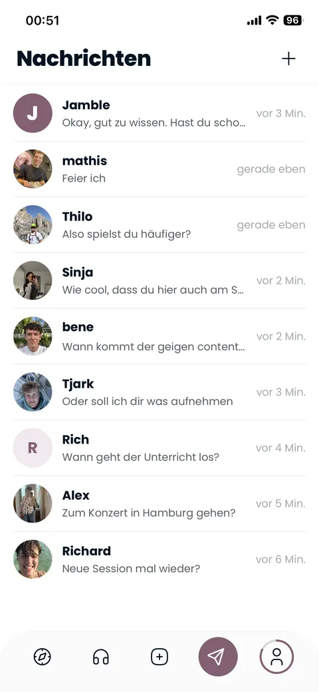
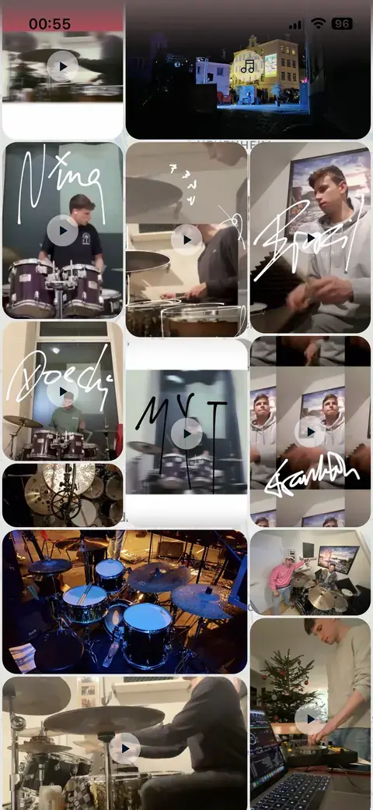
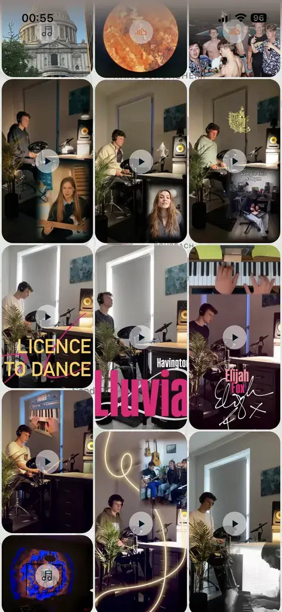
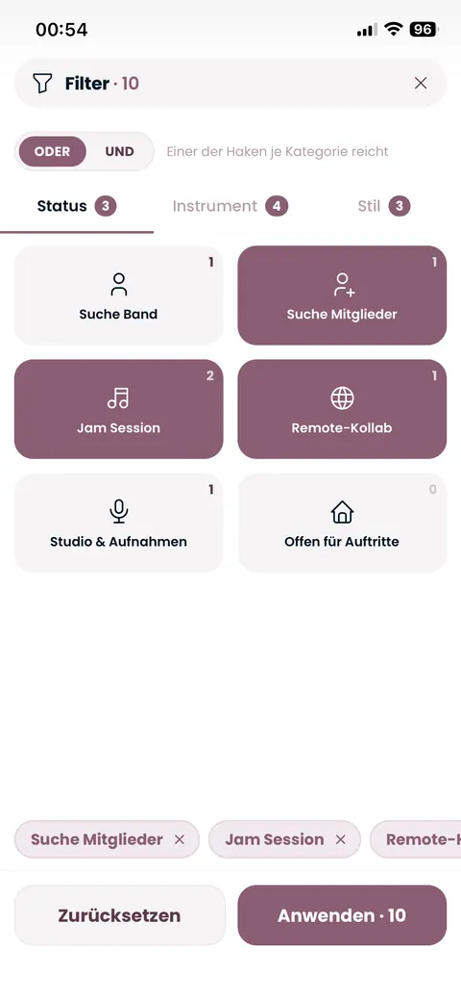
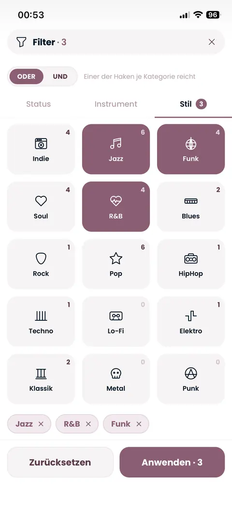
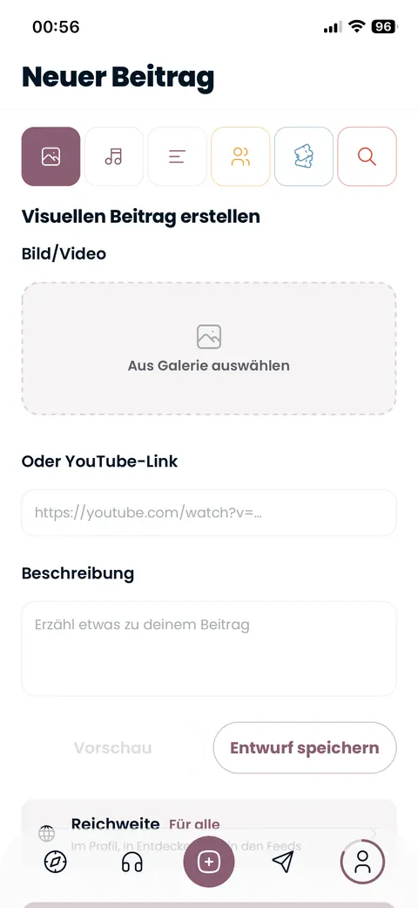

Find musicians in your city.
Jamble connects musicians more easily and more precisely, right where you live. Discover people on the map, learn more about them, listen in and message them. Plan jam sessions, recordings and gigs together. The more people join, the more everyone gets out of it.





New in town, or been here a while? But what is the fastest way to find like-minded musicians?
That is what Jamble is for.
Like-minded people
Find musicians nearby quickly and effortlessly, get a feel for them and connect.
Better than the alternatives
Built specifically for music and for your region. Jamble is the hub for all your other channels.
Collaborate
Plan and share jam sessions, gigs, recordings, rehearsals and get-togethers.
Discover people on the map
Every profile picture is a musician near you. Zoom through the neighbourhoods and see right away who plays where. Below it, a grid shows videos, photos and audio from the visible part of the map.
Posts from your area
When you move the map, the grid below changes. That way you hear and see what the musicians around you are posting right now: drum covers, studio sessions, piano by the lake and more.


Who is looking for what, plays what and likes what?
Filter by status, instrument and style. For instruments you also pick the level: beginner, intermediate or experienced.


OR: one match per category is enoughAND: everything has to match
Feed of people you follow
Follow musicians who inspire you and see their new posts in a feed of their own.
Just send a message
A post quickly turns into a message: ask about lessons, plan a gig or set up a new session. All inside the app, without detours through other channels.
Show what you do. And invite others.
With the plus button you create posts in different formats. Choose what you want to share.
Photos & videos
Upload photos and videos from your gallery or add a YouTube link. With description, preview and draft. You decide the reach yourself; by default everyone can see it.

Your profile, your business card
Show who you are: instruments with level, styles, a status like “Looking for a band” or “Jam session” and your links to Instagram, website, YouTube and SoundCloud. Below that you will find all posts, photos, music and gigs.
Good to know
Can I already use Jamble?
Yes, you can already use Jamble. The app is in its testing phase and available through TestFlight. Give it a try and help make it better.
Is Jamble available for Android?
Not yet. Right now Jamble is only available for iOS (iPhone); the beta runs through TestFlight. There is currently no Android version.
Is Jamble free?
Yes.
Who is Jamble for?
For musicians of every level, from beginners to experienced pros. For each instrument you state yourself how good you are.
How do I find people for my band?
Filter by a status like “Looking for members” or “Looking for a band”, plus instrument and style. The map shows you who fits near you.
Can I also play with people from other places?
Yes. The “Remote collab” status shows you musicians who also work together from a distance.
What can I share?
Photos and videos from your gallery or via YouTube link, your own audio files (mp3, wav or m4a up to 25 MB), links from Spotify, Apple Music and SoundCloud, and text in four font sizes.
Who sees my posts?
You decide that for every post through its reach. By default a post is visible to everyone: on your profile, in Discover and in the feeds.
What is the difference between a public and a private jam session?
Public jams are visible to everyone on the map, and invited people also get a notification. Private jams are only seen by the people you invite.
Which instruments and styles are there?
From vocals, guitar, bass, drums and piano to saxophone, violin and synth. Styles range from jazz, funk and soul through pop, rock and hip hop to classical, techno and folk.
Can I link my other profiles?
Yes. In your profile you can link Instagram, your website, YouTube and SoundCloud.
Can I add gigs?
Yes. Enter the name and exact address, check it in the app and set whether admission is free or paid.
Search less. Play more.
Try Jamble and find the musicians who fit you. The more people take part, the more everyone gets out of it.